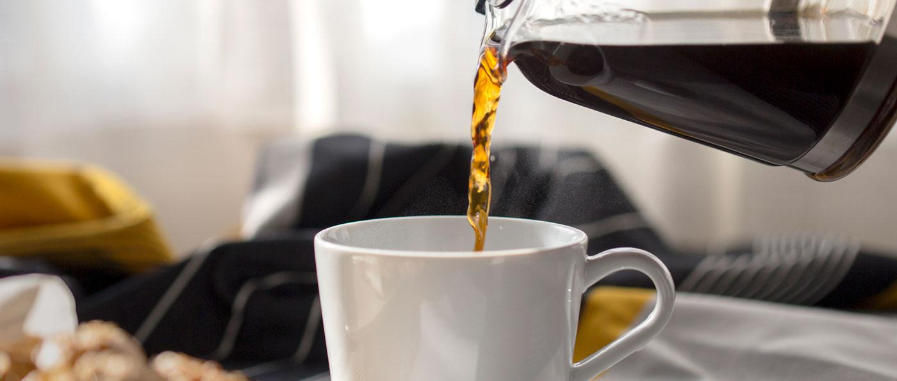

30 October,2020.
Finally, Treat Yourself! If You Prefer Ice Cream The Way It Is, There Is Nothing Wrong With Enjoying It On Occasion. You Deserve It. “Listen To Your Body When It’s Had Enough And Eat Slowly To Savor Your Treat,” Agnani Says. It’s Important To Be Mindful On How Much You Are Consuming And Avoid Getting To The Stage Where You Feel Stuffed.
You’ve Probably Heard Of Intermittent Fasting. Celebrities Like Jennifer Lopez And Beyoncé Have Talked About It On Instagram. Hugh Jackman Used It To Get Shredded To Play Wolverine. It’s A Whole Different Approach To Dieting.
There Are So Many Different Diets Today — Paleo, Keto, Mediterranean, Raw Vegan — But They All Focus On What To Eat. Intermittent Fasting Is Different Because It Focuses On When To Eat. That’s Also Why Intermittent Fasting, Or IF, Is Also Called A Time-Restricted Diet, With One Form Called An “Eight-Hour Diet.”
The Basic Idea Behind IF Is That You Put Your Body Into A Fasted State By Not Eating Or Drinking Any Calories For An Extended Period Of Time, And Then Only Eat During A Limited Window Of Hours. For Example, Since There Are 24 Hours In The Day, If You Fast For 16 Hours, You Have Eight Hours To Eat And Drink Your Calories. There Are Other Fasting Variations, Too
Writtern By,
Alfana Khatri
Head Holistic Health Coach
Gold’s Gym India
 Home
Gallery
Blogs
About Us
Contact
Sign In
Join
Home
Gallery
Blogs
About Us
Contact
Sign In
Join